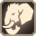

Elefante de guerra
Abrir en la wiki →Elefante. Animal noble que conserva parte de su naturaleza salvaje. Se precisa formación especial para montarlo
- Tipo
- Elefante
- Clases que la montan
- Jinete de elefantes

Elefante. Animal noble que conserva parte de su naturaleza salvaje. Se precisa formación especial para montarlo